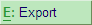
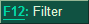
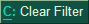
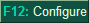
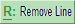
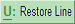
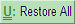

Button
Short-cut
Functionality

Alt+P
To print the report. Click here to learn more.

Alt+E
To export the report. Click here to learn more.

Alt+M
To send the report through e-mail. Click here to learn more.
Alt+O
To upload the report to an HTTP or FTP server. Click here to learn more.

Alt+F12
To apply selection criteria for the report. Click here to learn more.

Alt+C
This button is enabled only if the report filters are set. Clicking this button clears all filter criteria set for viewing the report.
Alt+F2
To change the report period. Click here to learn more.

Ctrl+E
Select the required line in the report and click the button. The details appear below the selected line. Clicking the button with an exploded line selected in the report hides the details.

F12
To change report display columns. Click here to learn more.

Ctrl+Q
Closes the report.

Alt+R
Hides the selected line from the report.

Alt+U
Unhides the nearest line hidden from the report.

Ctrl+U
Unhides all lines hidden from the report.